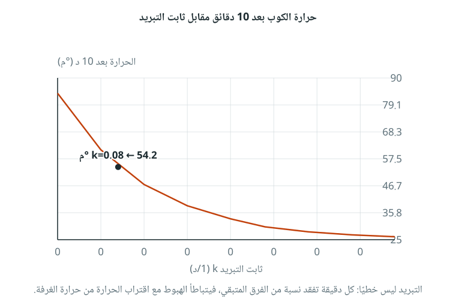

كوب الشاي الذي يبرد: لماذا يبطؤ التبريد مع الوقت؟
حرّك ثابت التبريد والزمن. محاكاة تعليمية لا قياس فيزيائي حقيقي.
محاكاة تعليمية لا قياس فيزيائي حقيقي: الأرقام تُحسب من النموذج لحظيًا، ولا تُقاس بأدوات منزلية.
افتراضات النموذج والمصدر
T(t) = T_env + (T₀ − T_env)·e^(−k·t)
حرارة الغرفة 25 °م ثابتة
معامل انتقال ثابت
لا تبخر من السطح
Newton's law of cooling — Wikipedia
Cooling and heating — time constant — The Engineering ToolBox
املأ كوبًا بماء ساخن، وضع فيه مقياس حرارة، وسجّل الدرجة كل دقيقة لعشر دقائق. الهبوط في الدقيقة الأولى أكبر بكثير من الهبوط في الدقيقة العاشرة — مع أن الغرفة والكوب لم يتغيرا.
السبب أن معدل الفقد يتناسب مع الفرق بين حرارة الجسم وحرارة المحيط، لا مع حرارة الجسم وحدها. كلما قلّ الفرق قلّ الفقد، فيتباطأ الهبوط ويقترب الكوب من حرارة الغرفة دون أن يصلها إلا بعد زمن طويل. هذا هو قانون نيوتن للتبريد، وحلّه دالة أسّية تنازلية.
للأسّية عمر نصف: الزمن اللازم لقطع نصف الفرق المتبقي، ويساوي 0.693/k. ثابت الزمن 1/k هو الزمن الذي يقطع فيه 63% من الفرق. القيم في المحاكاة نموذجية لكوب بلا غطاء في غرفة هادئة.
كيف تعمل الظاهرة؟
الفقد الحراري من سطح الكوب يجري بالحمل والتبريد الإشعاعي، وكلاهما يتناسب تقريبًا مع فرق الحرارة بين السطح والجو. مع اقتراب الحرارة من حرارة الغرفة يضعف الدافع فيهدأ التبادل.
العلاقة بالأرقام
T(t)=25+(90−25)·e^(−0.08t). بعد 10 د: 54.2 °م، وثابت الزمن 12.5 د، وعمر النصف 8.7 د. مضاعفة k تنصّف عمر النصف. المعادلة حلّ لـdT/dt=−k·(T−T_env)، وثابت الزمن 1/k هو الزمن اللازم لقطع 63% من الفرق الابتدائي.
مفاهيم متقاربة
يُخلط بين «التبريد الأسّي» و«التبريد الخطي»: الخطي يفقد كمية ثابتة كل دقيقة، أما هنا فالنسبة من الفرق المتبقي هي الثابتة — لذلك لا يمكن أن تنزل الحرارة تحت حرارة الغرفة.
حدود التطبيق
قانون نيوتن تقريب صالح لفرق حرارة معتدل مع تحرك هواء خفيف. عند فرق كبير يزيد نصيب الإشعاع على الحمل، ويصبح المجموع غير أسّي تمامًا؛ والتبخر من سطح مكشوف يضيف فقدًا غير محسوب هنا.

| الكمية | القيمة | المصدر |
|---|---|---|
| الحرارة بعد 10 دقائق (k=0.08) | 54.2 °م | [1] |
| ثابت الزمن | 12.5 دقيقة | [1] |
| عمر النصف الحراري | 8.7 دقيقة | [1] |
المصادر
- 1 Newton's law of cooling — Wikipedia. en.wikipedia.org/wiki/Newton%27s_law_of_cooling · اطُّلع عليه 2026-11-19
- 2 Cooling and heating — time constant — The Engineering ToolBox. www.engineeringtoolbox.com/thermal-dynamics-d_41.html · اطُّلع عليه 2026-11-19
راجعه: عبدالله الهويدي — مراجعة في تطبيق انفراد · 2026-11-19 · آخر تحديث 2026-11-19
رجوع إلى المعمل